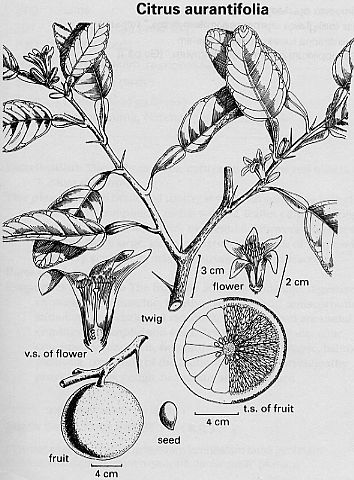

Citrus aurantifolia
(Christm.)
Taxonomic Details

----- Correct Name
----- Classification
----- Synonyms
----- Common Names
Other Biological Details
----- Habit and Habitat
----- Diagnostic Features
----- Reproductive Biology
---------- Breeding System
---------- Phenology
---------- Pollinators
---------- Seed Biology
----------Seed
Germination
----- Major Pests and Diseases
Economic Potential and Uses
----- Parts Used
-----Uses
----- Harvesting Practices
----- Produce and Products
----- Chemistry
----- Processing Techniques
----- Other uses
----- Economic Potential to the
Country
----- Export Potential
Miscellaneous Information
Literature
Taxonomic
Details
Correct Name
:Citrus aurantifolia (Christm.)
Family : Rutaceae
Synonyms : Citrus acida Roxb, C.
medica var. acida.
Common Names :
Hindi:Kagzi Nimbu
Bengali:Kagzi Nimbu
Malayalam:Cheru Naranga
Tamil:Elummicchchai
Telugu:Nimma pandu
Kannada:Nimbae
Misc:Kata Nimbu (Guj), Key, Mexican, or West Indian lime
Back to Top
Other
Biological Details
HABIT & HABITAT
Shrub or small straggling tree. Native probably to India, Southeast
Asia, Malay Peninsula, Persia and southern Europe; introduced to Hawaii, West
Indian Islands, Florida, and Mexico. Reached Haiti by 1520. By the mid-13th century,
it was well known in Mediterranean areas like Italy. Naturalized in hammocks,
coastal areas, Florida Keys, southern Florida, tropical America.
Availability :
Status :
Back to Top
DIAGNOSTIC FEATURES
Shrub or small straggling tree, 2-4 (-6) m tall, with small
stiff or willowy interlocking drooping thorny branches; thorns small, numerous,
sharp; bark grayish-brown; young branchlets light green, becoming darker with
age. Leaves alternate, evergreen, glossy, 4-8 cm long, 2-5 cm wide, elliptic-oval,
margin slightly indented; petioles margined or narrowly winged. Flowers small,
to 5 cm across, solitary or in axillary clusters of 3-10; calyx small, 4-5-pointed;
corolla white on both surfaces or pinkish; petals 4-5, oblong, 8-12 mm long,
2.5-3 mm wide, fleshy. Stamens small, 20-25, united into small groups; ovary
10-locular (9-12). Fruit 3.5-6 cm in diameter, globose or somewhat oblong, frequently
mammillate, light yellow; rind thin, smooth or slightly rough, pulp greenish,
acid; juice-sacs small, slender, pointed. Seeds small, elliptic to oval, pointed,
white, poly-embryonic; germination cryptocotylar, cotyledons white. Flowers
throughout the year, though mainly in spring and late summer; fruits irregularly
maturing throughout the year. New shoot growth is faintly purple-tinted and
flower buds and young flowers faintly purple-tinged.
Back to Top
REPRODUCTIVE BIOLOGY
Inflorescence is a axillary cyme or solitary
axillary. flowers are ebractate, pedilcellate, complete, hermaphrodite, actinomorphic,pentamerous,white
colored, sepals 5, petals 5, Androecium with many stamens, polydelphous, fused
filaments, anthers are basifixed, introrse. gynoeecium penta-multicarpellary,
syncarpous, superior, axile palcentation,style 1, stigma capitate and yellow.
Breeding System
:
Phenology :Flowers throughout the year, though mainly in
spring and late summer; fruits irregularly maturing throughout the year.
Pollinators:
Seed Biology :
fruit is a hespiridium, and the seeds are non-endospermic.
Seed Germination:
Back to Top
MAJOR PESTS & DISEASES
Pests: scale insects
Diseases: Many fungi attack lime trees, some of them being the following:
Alternaria citri, Armillaria mellea, Botryodiplodia theobromae, Capnodium citri,
C. citricola, Cephaleuros mycoidea, Colletotrichum gloeosporioides, Corticium
salmonicolor. C. solani, Coryneospora citricola, Cryptocalsa citri, Daldinia
eschscholtw, Diaporthe citri, Diplodia natalensis, Elsinoe australis, E. fawcettii
(scab), Eutypella citricola, E. russodes, Fomes semitostus, Fusarium equiseti,
F. lateritium, F. limonis, F. oxysporium (seedling wilt), F. semitectiim, F.
solani, Gloesporium limetticola, Glomerellacingulata .Haplosporellahesperidica.
Helminthosporium sp., Hymenochaete noxia, Hysterographium mori, Macrophomina
phaseoli, Meliola butleri, M. citricola, Nectria haematocitri, Phymatotrichum
omnivorum, Phytophthora cactorum, P. citrophthora, P. parasitica, Pleosphaeria
citri, Podoconis flagellata, Poria hypolateritia, Sclerotiwn rolfsii, Sphaceloma
fawcettii, Sphaeropsis tumefaciens (lime knot, witches broom), Sphaerostilbe
repens, Sporidesmium flagellation, S. uvariicola, Thielaviopsis basicola, Trichoderma
lignorwn, and Ustilina rufida. Bacteria attacking limes are Phythomonas citri,
Pseudomonas syringae, and Xanthomonas citri. Cuscuta americana and Loranthus
theobromae are known to parasitize trees. Most serious virus is tristeza. Among
the nematodes isolated from lime trees are: Hemicycliophora arenaria, Hoplolaimus
seinhorstii, Meloidogynejavanica, Pratylenchus brachyurus, P. minyus. P. penetrans.
P. vulnus, Radopholus similis, Tyienchulus semipenetrans, Tyienchorhynchus dactylurus,
and Xiphinema campinense. Surrounding young lime with cassava is said not only
to provide the shade necessary in early stages but also to protect against scale
insects.2 Key lime can be successfully grown in most areas without insect or
disease control sprays, although the fruit may be less attractive. Natural biological
control assists in keeping most pests at a low level. Key lime is highly susceptible
to lime anthracnose (wither tip, blossom blight). Avoid wetting the trees with
sprinklers, especially in the evening and during blooming. Avoid over fertilization
since lime anthracnose thrives on luxuriant growth. Copper sprays have been
used for control but are often not satisfactory because Key lime usually has
new growth. Diplodia dieback can be a serious fungus problem. Spring applications
of benomyl have reduced the incidence of dieback in Robinson tangerine trees,
which are also highly susceptible. Greasy spot can cause serious leaf loss.
Future outbreaks can be prevented by timely sprays of benornyl or copper. Foot
rot can attack the trunk and crown roots and seriously damage the tree. This
disease is easier to prevent than treat. Preventive measures include maintaining
a weed-free area around the trunk, planting high in well-drained soils, using
resistant rootstock and pruning to keep lower limbs off the ground.176
Back to Top
Economic
Potential and Uses
Parts used
Fruits, juice, lime leaves, peel and seeds.
Uses
Limes are one of the most important acid tropical fruits. The commercial lime
industry is based on the Key lime in areas other than the U.S. Juice is squeezed
over foods such as fish and other seafood. It is used as a source of citrate of
lime, for preparation of fruit drinks and added to alcoholic beverages. Indians
pickle the quartered fruits, adding such spices as chilies, ginger and/or turmeric.
Some Javanese dishes contain minced lime leaves Philippines candy the peel with
milk and coconut. Used in bottled limejuice and carbonated beverages. Several
years ago, cheaper sources of citric acid were discovered. Lime oil, obtained
from the peel, is used in perfumery, cosmetics and confectionary, and as a flavoring
in food products. Guenther adds that lime oil was the chief flavoring ingredient
of carbonated, nonalcoholic beverages of the ginger ale type, as well as of popular
"cola" beverages., ice creams, baked goods, confectionary, and candy.
Solid citrus waste, a by-product of fruit juice industry, used after suitable
treatment as valuable carbohydrate concentrates in animal feeds; fed particularly
to cattle and pigs. Seed cake, after oil removed, used as protein supplement in
cattle feed; not considered suitable for pigs and chickens unless toxic constituents
are removed by solvent action. The juice of this and other citrus species (1 part
juice: 15 parts water) is said to purify water polluted-by cho lera, dysentery
and typhoid,, if allowed to stand for half an hour. Bahamanas rub limejuice onto
the body as a mosquito repellent.
FOLK MEDICINE: According to Hartwell, 50 the juice
is used to treat tumors and warts Reported to be antidote, antiseptic, apertif,
bactericide, carminative collyrium depurative emetic laxative, liniment, pediculicide,
refrigerant, stomachic styptic, sudorific, tonic, and vermifuge, lime is a folk
remedy for bilious conditions, catarrh, cold, cough, cystis, diarrhea, dropsy,
dysentery, dysmenorrhea, dyspepsia, empacho, epistaxis, erysipelas, eye ailments,
fever, flu, gonorrhea, headache, hepatitis, insomnia, jaundice, liver ailments,
nausea, ophthalmia pneumonia, rheumatism, scurvy, skin ailments, sores, sore
throat, stomachache, stomatitis, thrush, toothaches, trachoma, tumors, urogenital
ailments, venereal ailments, wounds, yaws and yellow fever.4 Juice is refrigerant
and antiscorbutic' though, the vitamin C content may be lower than in other
citrus fruits citrus fruits. Limejuice is used in native medicine, usually in
mixture with other herbal ingredients. The aromatic leaves boiled to make a
lotion for fevers and eye diseases. Juice mixed with hot spices used in treatment
of dysentery. In fevers it is applied externally by friction, and internally
as refrigerant and febrifuge, sometimes combined with tamarind to give a laxative
effect. Also used for sore throat, thrust, and as a decoction for gonorrhea
and accompanying troubles. Juice also used as a vermifuge, for external wounds,
chronic sores, and yaws. Rubbed on temples to alleviate headache. Indians recommended
salted lime peel for dyspepsia. Decorticated seeds used in 'yellow fever' (jaundice)
and bilious fever2, 4,313Curacao natives double their vitamin odds by adding
limejuice to lemongrass tea for bronchitis. Trinidad natives apply limejuice
to erysipelas. Yutican natives take pure unsweetened lime juice for atherosclerosis.
Colds, cramps, diabetes, insomnia, gonorrhea and rheumatism. Natives of the
Caicos take it for typhoid. Mexicans take crushed lime seeds with sugar for
worms. Bahamanas take the leaf decoction for high blood pressure.5 Farmers who
use lime skins for feed claim that it rids cattle of ticks and gives their coats
a glossy sheen.177 Malayans apply pounded leaves to headache and use the fruit
juice for gonorrhea. Indonesians use the fruit juice for cold, cough, dengue,
and fever.
Harvesting Practices
Seedling trees require 4-8 years to bear fruit, reaching full bearing in 10 years;
budded trees require 3-5 years. Cuttings and air layers may bear precociously
in their first year after planting. From blossom to fruit in Mexican limes takes
9 months; for Tahiti lime, 10 months; in Florida, Tahiti types require 125-140
days, but continue to have good quality for 165 days or more. Spring blossoms
on 'Bears' in coastal California produce fruit ready for harvest in autumn or
early winter, ready for holiday season. West Indian forms bear about 75%_between
May 1 and October 31. Fresh limes are available year round, with peak supplies
from June through August. Key limes are harvested when yellow. Fruit is picked
to size for Tahiti limes, all fruits which will not pass through a metal ring
of predetermined diameter are harvested, irrespective of maturity and of maximum
acid content and storage life when picked. Fruit is pulled from tree without clipping,
placed in picking bats or in metal buckets, and then poured into one-bushel field
crates, and finally delivered to a processing plant. Fruits must undergo a 'curing'
or ripening process, usually in storage at temperature of 12.5-15.5°C with
relative humidity of 75-85 %. If fruit is needed for market immediately, the curing
process can be speeded up by raising temperature and adding dilute concentrations
of ethylene gas to air. Experiments have shown that clipping fruit results in
less injury to fruit. Fruit must be handled carefull during packing or blemishes
result as rinds are thick and fleshy during this stage. Do not pick in early morning
when limes are at maximum turgidity or when fruit is set, as oil may escape and
mar fruit. When stored at 9-10°C, with over 85% relative humidity, limes will
keep 6-8 weeks. Prevention of drying out of fruit is very important. Temperatures
below 7°C cause pitting, which condition develops soon after removal from
storage.
Produce and Products
fruit drinks, alcoholic beverages, pickles, Lime oil, perfumes, cosmetics and
cattle feed
Back to Top
Chemistry
Per 100 g, the fruit is reported to contain 262-400 calories, 4.4-6.5 g protyein,
1.9-26.7 g fat, 65.6-88.8 g total carbohydrate, 3.3-6.7 g fiber, 2.22-3.8 g ash,
144-308 mg Ca, 122-200 mg P, 0.0-6.7 mg Fe, 18.7-22.2 mg Na, 911-953mg K, 56-111mg
beta- carotene equivalent, 0.28-0.33 mg thiamine, 0.19-0.22 mg riboflavin, 1.1-2.9
mg niacin, and 345-511 mg ascorbic acid. Fresh lime pulp as feed contains 18.3%
DM, 7.8% CP, 16.9% CF, 3.6% ash, 5.0% fat, and 66.7% NFE.177 Citrus seeds contain
22-34 % oil and 7-16% crude protein.2 Cold pressed lime oil had been found to
contain linalool(0.09-0.2%), nonanol(0.1%), alpha-terpineol(0.3-1.05%), citronellal(1.4%),
decanal(0.1%), geranial5.1-6.8%), neral(0.4-4.6%), nonanol(0.2%), octanal(0.8%),
decyl acetate(0.1%), geranyl acetate(0.55-3.1%), neryl acetate, neryl acetate
(2.5-3.1%), neryl formate (0.2%), alpha-bergamotene (25%), alpha-bisabolene (2.5-4.0%),
camphene (0.5%), carophyllene (2.5%),/7-cymene (0.5-1.9%), limonene (47-64%),
myrcene (0.7-10.3%), alpha-phellandrene (0.2%), beta-phellandrene (0.9%), alpha-pinene
(1.2-2.4%), beta-pinene (10.1-11.9%), sabinene (1.6%), alpha-terpinene (0.8%),
gamma-terpinene (7.3-21.7%), terpinolene (0.6-1.2%), alpha-thujene (0.4%), and
nootkatone (0.01%). In the same paper, Shaw also reported that distilled lime
oil was found to contain octanoic acid (0.02%), borneol (0.6%), decanol (0.06%),
fenchol (1.2%), linalool (0.1%), octanol (0.01%), nonanol (0.01%), terpinen-1-ol
(0.7%), terpinen-4-ol (1.6%), alpha-terpineol (5.9%), beta-terpineol (0.7%), alpha,alpha,p
-trimethyl-benzyl alcohol (0.06%), decanal (0.09%), dodecanal (0.006%), furfural
(0.005%), geranial (0.1%), octanal (0.03%), geranyl acetate (0.3%), neryl acetate
(0.01%), alpha-bergamotene (0.5%), beta-bisabolene (0.9%), camphene (0.8%), caryophyllene
(0.3%), /7-cymene (11.6%), alpha-p-dimethylstyrene (0.5%), limonene (60.0%), myrcene
(0.8%), nonane (0.06%), alpha-pinene (0.8%), beta-pinene (0.9%), gamma-selinene
(0.2%), gamma-terpinene (0.6%), terpinolene (0.8%), foluene (0.002%), tridecane
(0.02%), undecane (0.03%), methylheptenone (0.006%), 1,4-cineole (1.8%), 1,8-cineole
(0.7%), 2,2-dimethyl-5-(-l-methyl-l-propenyl)-tetra-hydrofuran (0.3%), thyrnyl
methyl ether (0.02%), alpha,alpha, trimethyl benzyl alcohol methyl ether (0.2%),
and 2,6,6-trimethyl-2-vinyl-tetra-hydropyran (0.16%). The essential oil of several
citrus species are contrasted, compound by compound, by Shaw. He notes that there
are virtually no nonvolatile coumarins in the distilled oil to protect it from
oxidation during storage. In summary, cold pressed lime oil is similar to cold
pressed lemon oil, but usually has more citral, and has octanal rather than nonanal
as the main straight-chain aldehyde, and neryl and geranyl acetates are much higher
(over 7% of the cold pressed oil). The leaf oil contains 22.8% limonene, 25.6%
geranial, 18.1% neral, 7.1% neryl acetate, 1.32% methylheptenone, 1.2% linalool,
0.8% myrcene, 0.3% geranyl acetate, 0.15% isopulegol, 0.14% ocimene, 0.03% citronellal,
0.009% isoisopulegol, citronellol, and 22% unidentified. Noting reports that limonene
was useful in breast cancer, we coined a "recipe" for limonenade based
on GRAS foods and herbs rich in limonene:
Back to Top
Processing Techniques
Back to Top
Other Uses
ENERGY: If essential oil or limejuice is the product, there can be much by-product
biomass available for energy production. With essential oil running less than
1%, biomass residues could be over 99%. Pruning should amount to as much as an
olive tree, suggesting that there could be at least 1 ton of firewood prunings
per hectare.
Back to Top
Economical
Potential to the country
Yields vary with age of trees; 5-7-year-old orchards yield 5.9 tons/ha; older
orchards may yield 10.9 tons/ha. In Florida, yields average 10.6 tons/ha from
65 trees annually. Trees spaced at 4x4 m have yielded nearly 75 kg fruit annually.
Fruit yields are better from seeded than budded trees. According to Guenther61
yields can attain 24 MT/ha, but 12-18 may be considered a fair average. Budded
trees may be closer to 5 MT/ha. Oil is obtained by ecuelling (a process of rubbing
surface of ripe fruit gently in an eucelle, a copper saucer-shaped vessel studded
with projecting points that pierce oil glands; oil runs down the slope of vessel
into a hollow handle; or the oil is distilled. By ecuelling, 2.5-3 oz of oil/160
Ib barrel of fruit is obtained; by distillation, 8 oz of oil/barrel for picked
fresh limes, and 5.5-6 oz from pulp of fallen ripe limes after juice extraction
and racking (allowing pulp to settle out). Ca 60% of the fruit weight is limejuice.
About 50% may be skin, however. Fruits yield ca 0.3% essential oil. World production
in 1967 was about 8-10 million boxes limes. Production in United States is about
44,000 tons annually. India is largest center for lime culture. West Indies, Mexico,
Ghana, Egypt, and United States also produce substantial amount. Dominica grows
limes for most bottled limejuice. Florida produces most limes grown in United
States, with a considerable part of crop being processed into frozen concentrate
limeade and limejuice. Lime oil is a by-product. Cerca 1968, it cost $0.75 to
$1.00/bu to grow limes and about the same to harvest and deliver to packing house.
Grower needed to receive more than $2.00/bu to make any profit. In 1968, average
return to grower was $3.00/bu. Steadily increasing crops for the next few years
was foreseen. It cost over $2,500/ha to plant a lime grove and care for it until
it began to pay for itself. This figure does not include land or irrigation equipment.2
In reporting on lime juice and lime oil markets. Allen concluded "the decision
to plant lime in any area where there are no existing trees should be only taken
after the most exhaustive assessments of the issues involved. In 1966, the only
two markets of any significance for lime oil were the U.S. (ca 350 MT) and the
UK (< 100 MT), while world production was estimated at 550 MT. For lime juice
world production in 1971 was estimated at 4 million gallons (one ton of limes
gives about 75 gallons of settled juice), while demand was estimated at 3 million
gallons. In 1991, citrus oil exports from the U.S. rose from $36.5 million annually
to $37.9, with lime oil exports of $5 million, lemon oil of $11.8 and orange oil
of $13.2. Conversely, U.S. imports of lime oil in 1991 were nearly 1,000 MT worth
$13 million, cf 850 tons worth $12,775,000 in 1990, and 625 MT worth $11,275,000
in 1989. Mexico provided 427 MT in 1991, Peru 277 MT, and Brazil 114 tons. According
to Robinson181 150 barrels fresh fruit will give 100 gallons (ca 380 liters) of
concentrated limejuice. One ton of citrate of lime is equivalent to 266 barrels
of fruit. One ton of citric acid is equivalent to 400 barrels fruit. Listed as
dealers in lime oil:
Back to Top
Export Potential
Back to Top
Miscellaneous
Information
SPECIES AND CULTIVERS: Reported from the Indochina-Indonesia Center of Diversity
lime or cvs thereof, is reported to tolerate alkalinity, frost, hydrogen flouride,
high pH, laterite low pH photoperiod, poor soil, slope, and virus.7 Among citruses,
Rangpur lime is highly rated for lime and salt tolerance and moderately rated
for boron tolerance. It tolerates drought remarkably and is not so susceptible
to insect attacks and disease as other citruses grown in Hawaii Many varieties
and cultivars of limes have been developed, the most important of which are the
following: Rangpur', probably a hybrid between lime and mandarin orange (C. reticulata)
- fruit orange, segements easily separable; flowers continuously like lime; fruit
highly acid but less so than lime and has pleasant flavor suggestive of mandarin
orange; tree more resistant to cold than lime or lemon (Not grown commercially
but one of the most useful and dependable dooryard citrus.) Kusaie - Aroma more
lime-like than 'Rangpur', but fruit segment walls are rather orangy and separate
about as well as mandarin; useful for planting in Hawaii 'Calamondin' (sometimes
as Calamandrin), sometimes called Citrus mitis Blanco and C. microcarpa Bunge
but now considered a hybrid between Citrus reticulata var. austera and Fortunella
sp - fruit smaller than most limes, smooth, oblate, with orange rind and flesh,
segments short, easily separable very acid; tree more resistant to cold than oranges.
Not considered good for commercial fruits' but rich green foliage makes it a good
dooryard tree for coldest edges of citrus growing belt' Crossing of Calamondin'
with citrange has given variety 'Glen citrangedin', which is still more resistant
to cold than the 'Calamondin'. 'Limequats', hybrids between West Indian lime and
kumquats (Fortunella spp.) - 'Eustis', Tavares', and -Lakeland- are some of the
hybrids- fruits tend to be lime-like, but are not commercially promising, even
though trees are more resistant to cold and to wither-tip than limes; blossoming
more nearly all at one season, at least in California Lemonimes', such as 'Perrine-
(West Indian lime X Genoa lemon) - more cold resistant than West Indian lime,
but not hardy enough for southern Florida. 'Tahiti lime' (Citrus latifolia Tanaka,
2n=27), probably a hybrid between Key lime and either the lemon or citron- also
called Persian lime' especially in Australia - fruit medium to largest of lime,
oval obovate or short-elliptic, base usually rounded, apex rounded with areolar
area elevated into a low nipple- rarely produces viable pollen or viable ovules,
usually seedless, or seeds mono-embryonic' somewhat overbearing, mainly in winter,
fully as cold resistant as true lemons; grown mainly in California, Florida, Hawaii,
and Australia. 'Bears', 'Pond', and 'Idemor' are of this group 'West Indian or
Key limes' - less vigorous and robust than 'Tahiti' lime, much finer stemmed,
much thornier, smaller leaves distinctly paler; more cold sensitive and requires
more heat to develop
good fruit size; very susceptible to wither-tip (Gloeosporiwn limetticola), citrus
canker(Xanthomonas citri) and the Triteza for which it is most widely used as
an indicator plant- very resistant to citrus scab (Elsinoe fawcettii). Except
in the United States, the commercial' lime industry is restricted to the West
Indian lime, hence lime industry has developed in subtropical or tropical regions.
Grows in areas unsuitable for lemons. In the United States Tahiti or Persian lime
is grown commercially because of its cold-hardiness and lower heat requirement
In southern Florida, fruit attains acceptable maturity during summer months when
demand and prices are high Sweet limes are grown in Egypt and parts of Asia. 'Everglade',
grown at Riverside has excellent fruits but is susceptible to withertip. 'Palestine'
may be a lemon - vigorous tree used as a citrus rootstock in the Middle East.
Not grown commercially in United States 'Ogeechee lime' belongs to no citrus species
and fruit bears no resemblance to any citrus fruit. Fruit is size and shape of
olive, bright scarlet red, has acid flavor, and is usually preserved in sugar
'Kagzi' is the Mexican lime most frequent in India.2,313 (2n= 18)
CLIMATE AND SOIL: Ranging from Warm Temperate Dry to Moist through Tropical Very
Dry to Wet Forest Life Zones, lime is reported to tolerate annual precipitation
of 1.0 (irrigated) to 41 0 dm (mean of 48 cases = 15.1), annual temperature of
14.7 to 27.8°C (mean of 44 cases = 23 8°C) and pH of 4.3 to 84 (mean of
27 cases = 6.4).7 One of the least hardy of citrus fruits citron being even less
hardy, and less resistant to cold than lemon. Responds in growth very readily
to rises in temperature and in this condition is easily injured by cold which
leaves other citrus trees untouched; 12.8-35°C normally conducive to growth;
killed at 2°C, the lowest safe temperature.2,313 Trees should be planted in
locations sheltered from cold north winds. Key lime has a high total heat requirement
for the production of good sized fruit.176 Not apparently sensitive to day length,
but heat, moisture, and tree condition are involved in production of flowers.
Will grow where rainfall is quite frequent, with relative humidity from 10-80%
or more, about 1,500 m rainfall well distributed. In United States best fruit
quality occurs under high humidity. The Key lime is well adapted to a variety
of soils. Thrives on well-drained, open texture soil, those with uniform profile
throughout normal root zone being preferred. Extremely light sandy or very heavy
clay soils are unsuitable. Will succeed on poor sandy or rocky soils better than
any other citrus. The tree grows more vigorously in deep sandy soils, but tends
to have fewer fruit that are larger and less juicy and have a thicker peel.2,
176,313 Said to tolerate shallow soils over heavy clays.61 Will grow and fruit
well when poorly cultivated and cared for, even when neglected entirely. Requires
good drainage and will not tolerate waterlogging. Range of pH from 4 to 9 tolerated,
with a range of 5.5-6 best for sandy soils.2 more tolerant of alkalinity than
most other important citrus species. Mexican limes are more sensitive to cold
than lemons, but tolerate drought better than other citrus species.313
CULTIVATION: Key lime is precocious when grown from cuttings or air layers and
may produce some fruit within a year of planting. Frequently grown from seeds
in tropics, with seedling variation; reasonably true to parent plant; or budding,
the rough lemon or sweet orange being preferred for rootstock for Tahiti limes,
the latter especially on clayey soils. Seed should be kept a minimal time for
5-6 months. Seedlings are very susceptible to gummosis. In some places, local
wild grapefruits are used for rootstock. Time for propagation depends on season
of fruit maturation and climatic suitability (warm growing conditions). The
preferred time to plant is late winter or early spring, although potted trees
may be planted any time in warm locations. Sunny, well-drained sites with good
air circulation and protection from cold north winds are best for planting.
Trees are planted in orchards 3.3 m apart in rows 6.6 m apart, giving 450-500
trees per hectare.2,176,313 Guenther61 notes 3x3 m, 4x4 m, 5x5 m, on up to 8x8
m, richer soils getting the wider spacing. Mexicans plant at 6x8 m.61 Tahiti
lime softwood cuttings are rooted under polyethylene covers in partial shade.
Root-stocks used in Florida are 'Cleopatra' mandarin, rough lemon, and calamondin.
Some irrigation may be necessary in certain areas. Cultivation to control weeds
is necessary, unless permanent irrigation ditches are used. Since roots are
shallow, cultivation must be performed with care. In some areas, less N is required
than for most citrus fruit trees.2,313 In the Keys, the trees are sometimes
mulched with seaweed, no fertilizer being given. The improved appearance of
mulched trees and better size of the fruits indicates that this practice, with
a little fertilizer, might be a good management system.181 Dade County lime
farmers use 2:8:10 or 2:10:10 fertilizer.313 Limes are sometimes planted in
trenches chiseled about 40 cm deep in a rocky soil or in beds formed by scraping
up the rock crushed in preparation of land in order to give roots better anchorage
against hurricane winds. Pruning is used to lower head of trees and to thin
out normal branches and shorten branches that are overlapping with neighboring
trees. In humid tropical areas lower branches are pruned to let in air and light
to dry out crown and reduce gummosis. Where limes are permitted to fall, pruning
lower branches helps in harvesting fruit. Pruning plus topping for less wind
resistance makes a hedgerow. Use of insecticides and fungicides may be necessary,
and local agents should be consulted for advice.2,313
DISTRIBUTION: Native probably to India, Southeast Asia,
Malay Peninsula, Persia and southern Europe; introduced to Hawaii, West Indian
Islands, Florida, and Mexico. Reached Haiti by 1520. By the mid-13th century,
it was well known in Mediterranean areas like Italy. Naturalized in hammocks,
coastal areas, Florida Keys, southern Florida, tropical America.
ECOLOGY: Ranging from Warm Temperate Dry to Moist through Tropical Very Dry to
Wet Forest Life Zones, lime is reported to tolerate annual precipitation of 1.0
(irrigated) to 41 0 dm (mean of 48 cases = 15.1), annual temperature of 14.7 to
27.8°C (mean of 44 cases = 23 8°C) and pH of 4.3 to 84 (mean of 27 cases
= 6.4).7 One of the least hardy of citrus fruits citron being even less hardy,
and less resistant to cold than lemon. Responds in growth very readily to rises
in temperature and in this condition is easily injured by cold which leaves other
citrus trees untouched; 12.8-35°C normally conducive to growth; killed at
2°C, the lowest safe temperature.Trees should be planted in locations sheltered
from cold north winds. Key lime has a high total heat requirement for the production
of good sized fruit. Not apparently sensitive to day length, but heat, moisture,
and tree condition are involved in production of flowers. Will grow where rainfall
is quite frequent, with relative humidity from 10-80% or more, about 1,500 m rainfall
well distributed. In United States best fruit quality occurs under high humidity.
The Key lime is well adapted to a variety of soils. Thrives on well-drained, open
texture soil, those with uniform profile throughout normal root zone being preferred.
Extremely light sandy or very heavy clay soils are unsuitable. Will succeed on
poor sandy or rocky soils better than any other citrus. The tree grows more vigorously
in deep sandy soils, but tends to have fewer fruit that are larger and less juicy
and have a thicker peel. Said to tolerate shallow soils over heavy clays. Will
grow and fruit well when poorly cultivated and cared for, even when neglected
entirely. Requires good drainage and will not tolerate waterlogging. Range of
pH from 4 to 9 tolerated, with a range of 5.5-6 best for sandy soils. more tolerant
of alkalinity than most other important citrus species. Mexican limes are more
sensitive to cold than lemons, but tolerate drought better than other citrus species.
Back to Top
Literature
- J. agric. Fd. Chem., 1979, 27:246
-
Sharma, O.P.( 1977). Practcal Botany. Pragathi Prakashan, Meerut. P: 77-78.
Indian J. exp. Biol., 1997, 15:208
Back to Top